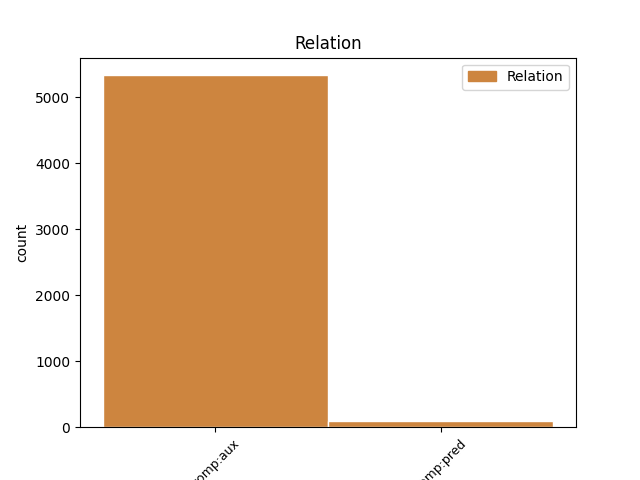
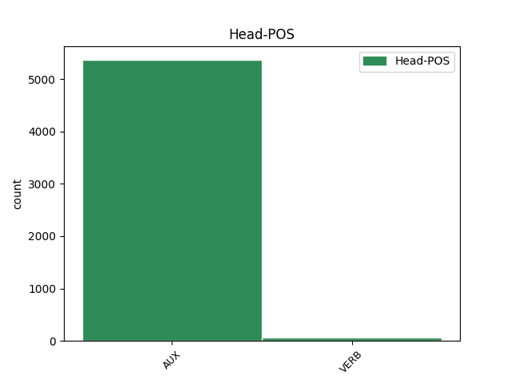
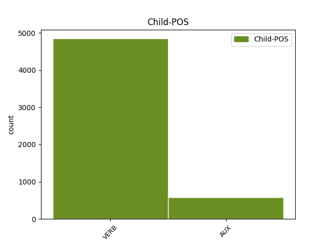

Distribution of features within this leaf



Agreement Rules sorted by frequency.
- When the dependent token is the complement for auxiliary(comp:aux) of the head token, and the head token is AUX
1 El _ _ _ _ 0 _ _ _
2 dirigent _ _ _ _ 0 _ _ _
3 conservador _ _ _ _ 0 _ _ _
4 va _ _ _ _ 0 _ _ _
5 fer _ _ _ _ 0 _ _ _
6 una _ _ _ _ 0 _ _ _
7 crida _ _ _ _ 0 _ _ _
8 al _ _ _ _ 0 _ _ _
9 PSOE _ _ _ _ 0 _ _ _
10 perquè _ _ _ _ 0 _ _ _
11 doni donar VERB VERB Mood=Sub|Number=Sing|Person=3|Tense=Pres|VerbForm=Fin 14 comp:aux _ _
12 el _ _ _ _ 0 _ _ _
13 seu _ _ _ _ 0 _ _ _
14 suport suport AUX AUX Mood=Sub|Number=Sing|Person=3|Tense=Pres|VerbForm=Fin 0 _ _ _
15 a _ _ _ _ 0 _ _ _
16 la _ _ _ _ 0 _ _ _
17 proposta _ _ _ _ 0 _ _ _
18 , _ _ _ _ 0 _ _ _
19 que _ _ _ _ 0 _ _ _
20 tirarà _ _ _ _ 0 _ _ _
21 endavant _ _ _ _ 0 _ _ _
22 gràcies _ _ _ _ 0 _ _ _
23 a _ _ _ _ 0 _ _ _
24 la _ _ _ _ 0 _ _ _
25 majoria _ _ _ _ 0 _ _ _
26 absoluta _ _ _ _ 0 _ _ _
27 del _ _ _ _ 0 _ _ _
28 PP _ _ _ _ 0 _ _ _
29 . _ _ _ _ 0 _ _ _
1 " _ _ _ _ 0 _ _ _
2 No _ _ _ _ 0 _ _ _
3 podem poder AUX AUX Mood=Ind|Number=Plur|Person=1|Tense=Pres|VerbForm=Fin 21 comp:pred _ _
4 comptar _ _ _ _ 0 _ _ _
5 amb _ _ _ _ 0 _ _ _
6 la _ _ _ _ 0 _ _ _
7 jerarquia _ _ _ _ 0 _ _ _
8 vaticana _ _ _ _ 0 _ _ _
9 per _ _ _ _ 0 _ _ _
10 buscar _ _ _ _ 0 _ _ _
11 la _ _ _ _ 0 _ _ _
12 pau _ _ _ _ 0 _ _ _
13 espiritual _ _ _ _ 0 _ _ _
14 i _ _ _ _ 0 _ _ _
15 religiosa _ _ _ _ 0 _ _ _
16 de _ _ _ _ 0 _ _ _
17 la _ _ _ _ 0 _ _ _
18 humanitat _ _ _ _ 0 _ _ _
19 " _ _ _ _ 0 _ _ _
20 , _ _ _ _ 0 _ _ _
21 diu dir VERB VERB Mood=Ind|Number=Sing|Person=3|Tense=Pres|VerbForm=Fin 0 _ _ _
22 . _ _ _ _ 0 _ _ _
1 La _ _ _ _ 0 _ _ _
2 mostra _ _ _ _ 0 _ _ _
3 presenta _ _ _ _ 0 _ _ _
4 també _ _ _ _ 0 _ _ _
5 les _ _ _ _ 0 _ _ _
6 obres _ _ _ _ 0 _ _ _
7 de _ _ _ _ 0 _ _ _
8 Fages _ _ _ _ 0 _ _ _
9 que _ _ _ _ 0 _ _ _
10 han _ _ _ _ 0 _ _ _
11 estat ser AUX AUX Gender=Masc|Number=Sing|Tense=Past|VerbForm=Part 0 _ _ _
12 més _ _ _ _ 0 _ _ _
13 il·lustrades il·lustrar VERB VERB Gender=Fem|Number=Plur|Tense=Past|VerbForm=Part 11 comp:pred _ _
14 pels _ _ _ _ 0 _ _ _
15 artistes _ _ _ _ 0 _ _ _
16 , _ _ _ _ 0 _ _ _
17 com _ _ _ _ 0 _ _ _
18 ' _ _ _ _ 0 _ _ _
19 Les _ _ _ _ 0 _ _ _
20 bruixes _ _ _ _ 0 _ _ _
21 de _ _ _ _ 0 _ _ _
22 Llers _ _ _ _ 0 _ _ _
23 ' _ _ _ _ 0 _ _ _
24 , _ _ _ _ 0 _ _ _
25 ' _ _ _ _ 0 _ _ _
26 Poema _ _ _ _ 0 _ _ _
27 dels _ _ _ _ 0 _ _ _
28 tres _ _ _ _ 0 _ _ _
29 reis _ _ _ _ 0 _ _ _
30 ' _ _ _ _ 0 _ _ _
31 , _ _ _ _ 0 _ _ _
32 ' _ _ _ _ 0 _ _ _
33 Balada _ _ _ _ 0 _ _ _
34 del _ _ _ _ 0 _ _ _
35 Sabater _ _ _ _ 0 _ _ _
36 d' _ _ _ _ 0 _ _ _
37 Ordis _ _ _ _ 0 _ _ _
38 ' _ _ _ _ 0 _ _ _
39 , _ _ _ _ 0 _ _ _
40 ' _ _ _ _ 0 _ _ _
41 El _ _ _ _ 0 _ _ _
42 triomf _ _ _ _ 0 _ _ _
43 i _ _ _ _ 0 _ _ _
44 el _ _ _ _ 0 _ _ _
45 rodolí _ _ _ _ 0 _ _ _
46 de _ _ _ _ 0 _ _ _
47 la _ _ _ _ 0 _ _ _
48 Gala _ _ _ _ 0 _ _ _
49 i _ _ _ _ 0 _ _ _
50 en _ _ _ _ 0 _ _ _
51 Dalí _ _ _ _ 0 _ _ _
52 ' _ _ _ _ 0 _ _ _
53 i _ _ _ _ 0 _ _ _
54 ' _ _ _ _ 0 _ _ _
55 Somni _ _ _ _ 0 _ _ _
56 de _ _ _ _ 0 _ _ _
57 Cap _ _ _ _ 0 _ _ _
58 de _ _ _ _ 0 _ _ _
59 Creus _ _ _ _ 0 _ _ _
60 ' _ _ _ _ 0 _ _ _
61 . _ _ _ _ 0 _ _ _
Disagree Examples:
1 El _ _ _ _ 0 _ _ _
2 Tribunal _ _ _ _ 0 _ _ _
3 Suprem _ _ _ _ 0 _ _ _
4 ( _ _ _ _ 0 _ _ _
5 TS _ _ _ _ 0 _ _ _
6 ) _ _ _ _ 0 _ _ _
7 ha haver AUX AUX Mood=Ind|Number=Sing|Person=3|Tense=Pres|VerbForm=Fin 0 _ _ _
8 confirmat confirmar VERB VERB Gender=Masc|Number=Sing|Tense=Past|VerbForm=Part 7 comp:aux _ _
9 la _ _ _ _ 0 _ _ _
10 condemna _ _ _ _ 0 _ _ _
11 a _ _ _ _ 0 _ _ _
12 quatre _ _ _ _ 0 _ _ _
13 anys _ _ _ _ 0 _ _ _
14 d' _ _ _ _ 0 _ _ _
15 inhabilitació _ _ _ _ 0 _ _ _
16 especial _ _ _ _ 0 _ _ _
17 i _ _ _ _ 0 _ _ _
18 una _ _ _ _ 0 _ _ _
19 multa _ _ _ _ 0 _ _ _
20 de _ _ _ _ 0 _ _ _
21 3,6 _ _ _ _ 0 _ _ _
22 milions _ _ _ _ 0 _ _ _
23 de _ _ _ _ 0 _ _ _
24 pessetes _ _ _ _ 0 _ _ _
25 per _ _ _ _ 0 _ _ _
26 a _ _ _ _ 0 _ _ _
27 quatre _ _ _ _ 0 _ _ _
28 veterinaris _ _ _ _ 0 _ _ _
29 gironins _ _ _ _ 0 _ _ _
30 , _ _ _ _ 0 _ _ _
31 per _ _ _ _ 0 _ _ _
32 haver _ _ _ _ 0 _ _ _
33 se _ _ _ _ 0 _ _ _
34 beneficiat _ _ _ _ 0 _ _ _
35 dels _ _ _ _ 0 _ _ _
36 càrrecs _ _ _ _ 0 _ _ _
37 públics _ _ _ _ 0 _ _ _
38 que _ _ _ _ 0 _ _ _
39 desenvolupaven _ _ _ _ 0 _ _ _
40 i _ _ _ _ 0 _ _ _
41 la _ _ _ _ 0 _ _ _
42 seva _ _ _ _ 0 _ _ _
43 relació _ _ _ _ 0 _ _ _
44 amb _ _ _ _ 0 _ _ _
45 les _ _ _ _ 0 _ _ _
46 empreses _ _ _ _ 0 _ _ _
47 càrniques _ _ _ _ 0 _ _ _
48 de _ _ _ _ 0 _ _ _
49 la _ _ _ _ 0 _ _ _
50 zona _ _ _ _ 0 _ _ _
51 en _ _ _ _ 0 _ _ _
52 oferir _ _ _ _ 0 _ _ _
53 los _ _ _ _ 0 _ _ _
54 serveis _ _ _ _ 0 _ _ _
55 particulars _ _ _ _ 0 _ _ _
56 . _ _ _ _ 0 _ _ _
1 La _ _ _ _ 0 _ _ _
2 sentència _ _ _ _ 0 _ _ _
3 , _ _ _ _ 0 _ _ _
4 a _ _ _ _ 0 _ _ _
5 la _ _ _ _ 0 _ _ _
6 qual _ _ _ _ 0 _ _ _
7 ha haver AUX AUX Mood=Ind|Number=Sing|Person=3|Tense=Pres|VerbForm=Fin 0 _ _ _
8 tingut tenir VERB VERB Gender=Masc|Number=Sing|Tense=Past|VerbForm=Part 7 comp:aux _ _
9 accés _ _ _ _ 0 _ _ _
10 Intra-ACN _ _ _ _ 0 _ _ _
11 , _ _ _ _ 0 _ _ _
12 desestima _ _ _ _ 0 _ _ _
13 els _ _ _ _ 0 _ _ _
14 recursos _ _ _ _ 0 _ _ _
15 interposats _ _ _ _ 0 _ _ _
16 pels _ _ _ _ 0 _ _ _
17 processats _ _ _ _ 0 _ _ _
18 , _ _ _ _ 0 _ _ _
19 Albert _ _ _ _ 0 _ _ _
20 Bramón _ _ _ _ 0 _ _ _
21 , _ _ _ _ 0 _ _ _
22 president _ _ _ _ 0 _ _ _
23 del _ _ _ _ 0 _ _ _
24 Col·legi _ _ _ _ 0 _ _ _
25 de _ _ _ _ 0 _ _ _
26 Veterinaris _ _ _ _ 0 _ _ _
27 de _ _ _ _ 0 _ _ _
28 Girona _ _ _ _ 0 _ _ _
29 en _ _ _ _ 0 _ _ _
30 el _ _ _ _ 0 _ _ _
31 moment _ _ _ _ 0 _ _ _
32 dels _ _ _ _ 0 _ _ _
33 fets _ _ _ _ 0 _ _ _
34 , _ _ _ _ 0 _ _ _
35 i _ _ _ _ 0 _ _ _
36 Josefina _ _ _ _ 0 _ _ _
37 J. _ _ _ _ 0 _ _ _
38 , _ _ _ _ 0 _ _ _
39 Pere _ _ _ _ 0 _ _ _
40 C. _ _ _ _ 0 _ _ _
41 i _ _ _ _ 0 _ _ _
42 Mateu _ _ _ _ 0 _ _ _
43 B. _ _ _ _ 0 _ _ _
44 , _ _ _ _ 0 _ _ _
45 que _ _ _ _ 0 _ _ _
46 actuaven _ _ _ _ 0 _ _ _
47 com _ _ _ _ 0 _ _ _
48 a _ _ _ _ 0 _ _ _
49 inspectors _ _ _ _ 0 _ _ _
50 veterinaris _ _ _ _ 0 _ _ _
51 de _ _ _ _ 0 _ _ _
52 la _ _ _ _ 0 _ _ _
53 Generalitat _ _ _ _ 0 _ _ _
54 , _ _ _ _ 0 _ _ _
55 i _ _ _ _ 0 _ _ _
56 que _ _ _ _ 0 _ _ _
57 van _ _ _ _ 0 _ _ _
58 ser _ _ _ _ 0 _ _ _
59 condemnats _ _ _ _ 0 _ _ _
60 per _ _ _ _ 0 _ _ _
61 l' _ _ _ _ 0 _ _ _
62 Audiència _ _ _ _ 0 _ _ _
63 de _ _ _ _ 0 _ _ _
64 Girona _ _ _ _ 0 _ _ _
65 per _ _ _ _ 0 _ _ _
66 un _ _ _ _ 0 _ _ _
67 delicte _ _ _ _ 0 _ _ _
68 de _ _ _ _ 0 _ _ _
69 negociacions _ _ _ _ 0 _ _ _
70 prohibides _ _ _ _ 0 _ _ _
71 a _ _ _ _ 0 _ _ _
72 funcionaris _ _ _ _ 0 _ _ _
73 . _ _ _ _ 0 _ _ _
1 Una _ _ _ _ 0 _ _ _
2 setantena _ _ _ _ 0 _ _ _
3 de _ _ _ _ 0 _ _ _
4 treballadors _ _ _ _ 0 _ _ _
5 de _ _ _ _ 0 _ _ _
6 Fomento _ _ _ _ 0 _ _ _
7 de _ _ _ _ 0 _ _ _
8 Construcciones _ _ _ _ 0 _ _ _
9 y _ _ _ _ 0 _ _ _
10 Contratas _ _ _ _ 0 _ _ _
11 a _ _ _ _ 0 _ _ _
12 Manresa _ _ _ _ 0 _ _ _
13 , _ _ _ _ 0 _ _ _
14 gairebé _ _ _ _ 0 _ _ _
15 la _ _ _ _ 0 _ _ _
16 totalitat _ _ _ _ 0 _ _ _
17 de _ _ _ _ 0 _ _ _
18 la _ _ _ _ 0 _ _ _
19 plantilla _ _ _ _ 0 _ _ _
20 , _ _ _ _ 0 _ _ _
21 s' _ _ _ _ 0 _ _ _
22 han haver AUX AUX Mood=Ind|Number=Plur|Person=3|Tense=Pres|VerbForm=Fin 0 _ _ _
23 manifestat manifestar VERB VERB Gender=Masc|Number=Sing|Tense=Past|VerbForm=Part 22 comp:aux _ _
24 aquest _ _ _ _ 0 _ _ _
25 migdia _ _ _ _ 0 _ _ _
26 pels _ _ _ _ 0 _ _ _
27 carrers _ _ _ _ 0 _ _ _
28 de _ _ _ _ 0 _ _ _
29 la _ _ _ _ 0 _ _ _
30 ciutat _ _ _ _ 0 _ _ _
31 . _ _ _ _ 0 _ _ _
1 Els _ _ _ _ 0 _ _ _
2 treballadors _ _ _ _ 0 _ _ _
3 han haver AUX AUX Mood=Ind|Number=Plur|Person=3|Tense=Pres|VerbForm=Fin 0 _ _ _
4 iniciat iniciar VERB VERB Gender=Masc|Number=Sing|Tense=Past|VerbForm=Part 3 comp:aux _ _
5 aquesta _ _ _ _ 0 _ _ _
6 matinada _ _ _ _ 0 _ _ _
7 una _ _ _ _ 0 _ _ _
8 vaga _ _ _ _ 0 _ _ _
9 indefinida _ _ _ _ 0 _ _ _
10 dels _ _ _ _ 0 _ _ _
11 serveis _ _ _ _ 0 _ _ _
12 de _ _ _ _ 0 _ _ _
13 neteja _ _ _ _ 0 _ _ _
14 viària _ _ _ _ 0 _ _ _
15 i _ _ _ _ 0 _ _ _
16 recollida _ _ _ _ 0 _ _ _
17 d' _ _ _ _ 0 _ _ _
18 escombraries _ _ _ _ 0 _ _ _
19 . _ _ _ _ 0 _ _ _
1 L' _ _ _ _ 0 _ _ _
2 aturada _ _ _ _ 0 _ _ _
3 s' _ _ _ _ 0 _ _ _
4 ha haver AUX AUX Mood=Ind|Number=Sing|Person=3|Tense=Pres|VerbForm=Fin 0 _ _ _
5 convocat convocar VERB VERB Gender=Masc|Number=Sing|Tense=Past|VerbForm=Part 4 comp:aux _ _
6 amb _ _ _ _ 0 _ _ _
7 caràcter _ _ _ _ 0 _ _ _
8 indefinit _ _ _ _ 0 _ _ _
9 . _ _ _ _ 0 _ _ _